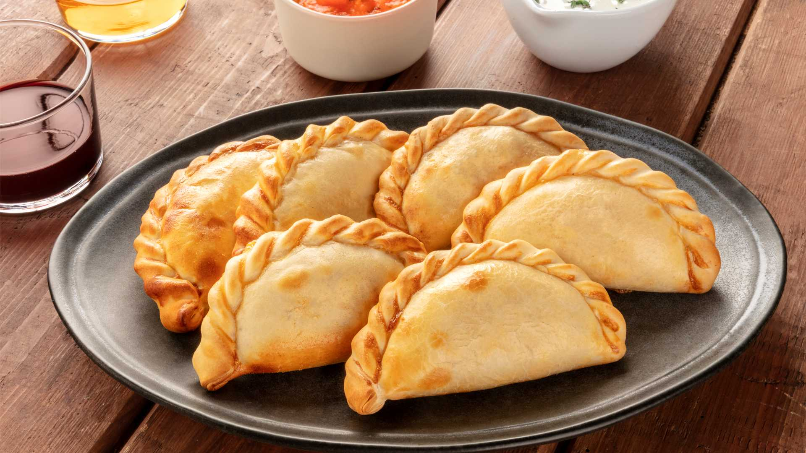

Empanadas

La empanada de carne es una masa circular doblada a la mitad (formando una media luna) que encierra un relleno llamado "pino" o "recado"
Se caracteriza por el equilibrio entre lo salado de la carne, el dulzor de la cebolla cocida y el toque de especias como el comino y el pimentón. Se pueden cocinar al horno para una textura más seca o fritas para un acabado crujiente
Ingredientes
- 500g de carne de res (cortada a cuchillo o picada/molida).
- 500g de cebolla blanca (la misma cantidad que de carne para asegurar jugosidad).
- 2 huevos duros picados.
- Aceitunas verdes sin hueso.
- Especias: Sal, pimienta, pimentón dulce, comino y una pizca de ají molido (opcional).
Grasa o aceite para saltear.
- Cebollino (cebolla de verdeo) picado.
Pasos
- el relleno: Sofríe la cebolla picada en cubos pequeños hasta que esté transparente y luego agrega la carne para cocinarla brevemente.
- Condimentar el recado: Agrega sal, comino y abundante pimentón. Deja enfriar la mezcla en la heladera para que los jugos se solidifiquen.
- Elaborar la masa: Mezcla la harina con la grasa derretida y agua tibia con sal hasta formar un bollo liso y elástico.
- Cortar los discos: Estira la masa finamente y corta círculos de unos 12 centímetros de diámetro.
- Armar las empanadas: Coloca una cucharada de relleno frío en el centro del disco, añade un trozo de huevo duro y una aceituna.
- Realizar el repulgue: Humedece los bordes con agua, dobla la masa a la mitad y presiona los bordes con los dedos o un tenedor para sellar.
- Cocción final: Hornea a fuego fuerte durante 15 minutos o fríelas en aceite caliente hasta que la masa esté dorada y crujiente.
Inicio